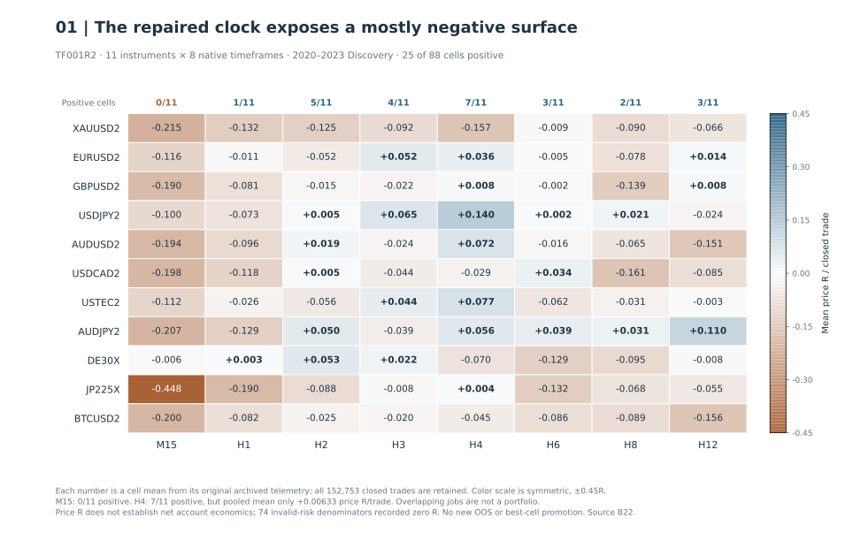

Engulfing Bar Play (EBP)
Which engulfing-candle signals actually reach a trade?
On four-hour gold signals, leaving a retracement order open could block later setups, while replacing it admitted a different set of trades.
Decision All order-policy variants parked.
Limitation The positive good-till-cancelled variants each closed only 3 trades. That left too little evidence to choose an order policy.
The engulfing candle and the retracement
An engulfing bar can sweep the previous candle's high or low and close beyond the opposite side of the previous candle's body. The two candles need not have opposite colors. This is typically framed as a higher-timeframe swing setup, with a focus on four-hour charts and above.
Can an engulfing candle support a continuation trade entered on a retracement? The setup waits for a pullback into the candle. How long that order stays pending determines which later signals can trade.
Four contracts on the same gold signals
EBP-PY-H002, XAUUSD2 H4, 2020-01-01 to 2026-08-01 exclusive: historical revalidation. Each arm sees 1,718 signals; order ownership changes exposure. All arms PARK and the overall verdict is AMBIGUITY_SENSITIVE. The positive three-trade arms fail exposure/stability gates. Full-resolution SVG · Exact policies, execution corrections and source binding B21.

The separate native-timeframe study
The repaired native-clock matrix is mostly negative: 25 of 88 cells are positive on already-examined 2020–2023 Discovery. All eleven M15 cells are negative; H4 has seven positive cells but a pooled mean of only +0.00633 price R per trade. The matrix was closed as Discovery, with no broad transportable edge and no replacement of frozen candidates.


Which rules changed trade eligibility?
GTC blocks later signals behind one pending order. Replacement first checks active-position eligibility: a position without applied break-even blocks replacement; otherwise the earlier pending order is superseded by the new signal. Both have no time expiry. Break-even confirmation uses either a fully post-entry completed H4 candle or a later intrabar Bid tick exceeding the signal extreme. All four arms share executable stop-gap fills, arm-until-placeable break-even and deterministic target-level exits. Their results cannot be pooled with the native MT5 matrix as repeated confirmation.
The frozen ambiguity matrix quantified that difference. Two replacement-policy arms produced 1,257 and 1,297 trades, with totals -119.4104R and -94.9029R, while the GTC arms remained sparse. No interpretation was selected as a winner. These are different contracts and cannot be pooled as repeated confirmation of one strategy. The strategy specification therefore needs to fix order lifetime and occupancy before testing.
What later validation could establish
This map describes already-examined Discovery history. It supplied no fresh OOS evidence and changed no previously frozen candidate. Their separate validation records were mixed: a GBPUSD survivor retained qualification work, a USDJPY lockbox was weak, and a Nasdaq H4 candidate failed validation. After-cost significance and execution qualification remained separate gates. The repaired matrix did not authorize selecting a new clock or replacing an already-tested candidate after seeing the surface.
Limits of historical order acceptance
EBP tooling separated reconstructed signal geometry from historical order acceptance. One replay reached a recorded market-closed rejection even though raw quotes existed, followed by acceptance on retry. The quote stream alone could not establish the missing historical session rules or broker constraints. Archived event-tape diagnostics were labeled oracle-assisted; independent causal broker parity remained INDETERMINATE.
Order-policy and timeframe decisions
The positive good-till-cancelled variants each closed only 3 trades. That left too little evidence to choose an order policy. A separate discovery study corrected how each timeframe generated signals and still found mostly weak results. Neither experiment produced a candidate for trading.
Source text · B21 · B22
Source evidence and reproducibility
Original Markdown article · B21 · B22 · B24
The public scripts rebuild selected exhibits from disclosed aggregates. The historical backtests require private inputs and implementations.